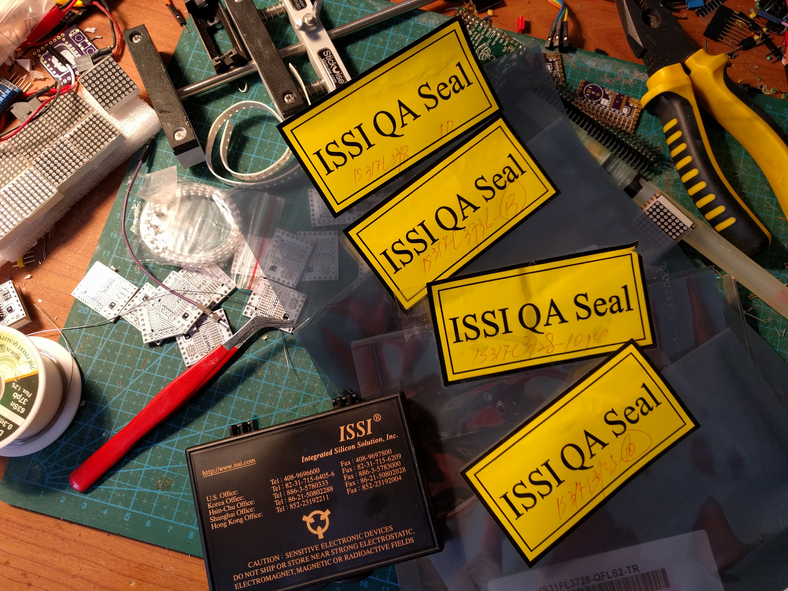
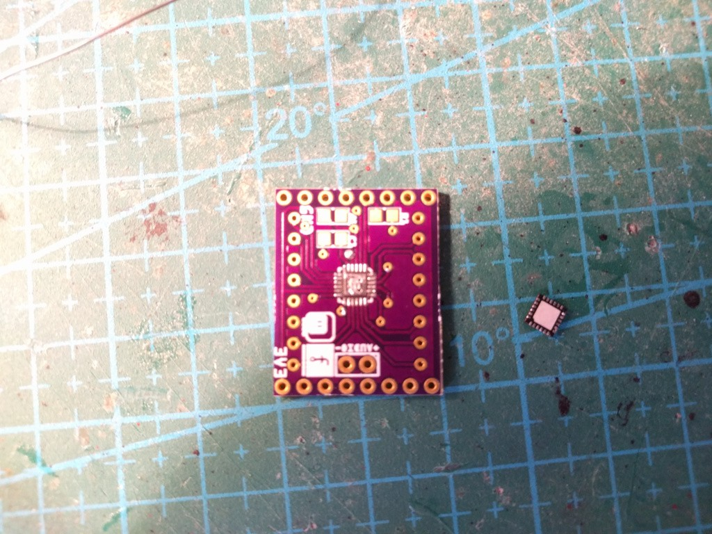

Chips!¶
Published on 2017-04-10 in D1 Mini Matrix Deluxe Shields.
The chips arrived today!
And since I already have the first version of the PCB for the 8x8 matrix, I decided to give it a try, even though that PCB actually misses two important resistors, and instead connects signals directly to VCC/GND. So I first tinned both the pads and the chip:
I wasn’t supposed to tin the center pad, but a bit of solder got there, so I spread it as thinly as I could. Next, I placed the chip as precisely as I could, and heated the pads with my soldering iron, one by one, until the solder stuck to the sides of the chip. Added flux and removed excess solder. Ready!
Except the connections weren’t very good. I had to re-touch some of the pads, until I got it to appear properly as 0x96 on the I²C scan. But some of the rows still weren’t displaying, so I re-touched some more pads and… apparently the solder from the ground pad got onto the VCC pad – I have a short in there now, and no way to get to it.
Tomorrow I will go to a hackerspace and use their hot air gun to remove the chip and solder it properly.